To develop the first-order necessary condition for optimality, we need a notion
of derivative for functionals. Let
 be a functional on a
function space
be a functional on a
function space
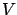
, and consider some function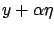
, where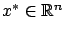
, which we utilized earlier.
A linear functional
 is
called the first variation of
is
called the first variation of  at
at  if for all
if for all
 and all
and all  we have
we have
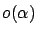
satisfies (1.6). The somewhat cumbersome notation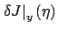
is meant to emphasize that the linear term in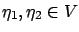
and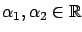
.
The first variation as defined above
corresponds to the Gateaux derivative of  , which is
just the usual derivative of
, which is
just the usual derivative of
 with respect to
with respect to  (for fixed
(for fixed  and
and  ) evaluated at
) evaluated at
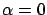
:
Now, suppose that  is a local minimum of
is a local minimum of  over some subset
over some subset  of
.
We call a perturbation1.3
of
.
We call a perturbation1.3  admissible
(with respect to the subset
admissible
(with respect to the subset  )
if
)
if
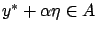
for all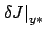
exists (which is of course not always the case) so that we have (1.33). Applying the same reasoning that we used to derive the necessary condition (1.7) on the basis of (1.5), we quickly arrive at the first-order necessary condition for optimality: For all admissible perturbations
When we were studying a minimum  of
of
 with the help
of the function
with the help
of the function
 , it was easy to translate the equality
, it was easy to translate the equality
 via the formula (1.10) into the necessary
condition
via the formula (1.10) into the necessary
condition
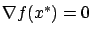
. The necessary condition (1.37), while conceptually very similar, is much less constructive. To be able to apply it, we need to learn how to compute the first variation of some useful functionals. This subject will be further discussed in the next chapter; for now, we offer an example for the reader to work out.
Observe that our notion of the first variation, defined via the expansion (1.33), is
independent of the choice of the norm on
. This means that the first-order necessary condition (1.37) is valid for every norm. To obtain a necessary condition better
tailored to a particular norm, we could define
 differently, by using
the following
expansion instead of (1.33):
differently, by using
the following
expansion instead of (1.33):
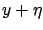
which can approach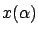
utilized in Section 1.2.2. We will start seeing perturbations of this kind in Chapter 3.
In what follows, we retain our original definition of the first variation
in terms of (1.33).
It is somewhat simpler to work with and
is adequate for our needs (at least through Chapter 2). While the norm-dependent formulation could potentially provide sharper conditions for optimality, it takes more work to verify (1.38) for all  compared to verifying (1.33) for a fixed
compared to verifying (1.33) for a fixed  . Besides, we will
eventually abandon the analysis based on the first variation altogether in
favor of more powerful tools. However, it is useful to be aware of the alternative formulation (1.38), and we will occasionally make some side remarks related to it. This issue will resurface in Chapter 3 where, although the alternative definition (1.38) of the first variation will not be specifically needed, we will use more general perturbations along the lines of the preceding discussion.
. Besides, we will
eventually abandon the analysis based on the first variation altogether in
favor of more powerful tools. However, it is useful to be aware of the alternative formulation (1.38), and we will occasionally make some side remarks related to it. This issue will resurface in Chapter 3 where, although the alternative definition (1.38) of the first variation will not be specifically needed, we will use more general perturbations along the lines of the preceding discussion.

![\begin{Exercise}
Consider the space
$V=\mathcal C^0([0,1],\mathbb{R})$, let $g:...
...\left.\delta J\right\vert _{y}(\eta)=
\int_0^1g'(y(x))\eta(x)dx$.
\end{Exercise}](img268.gif)